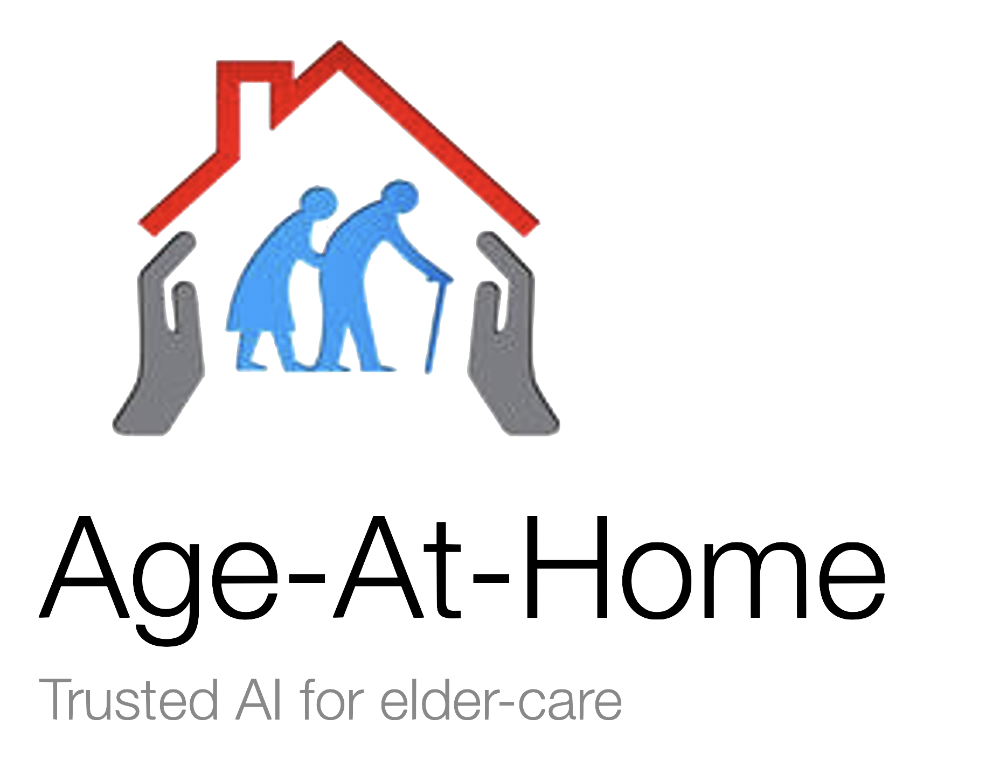
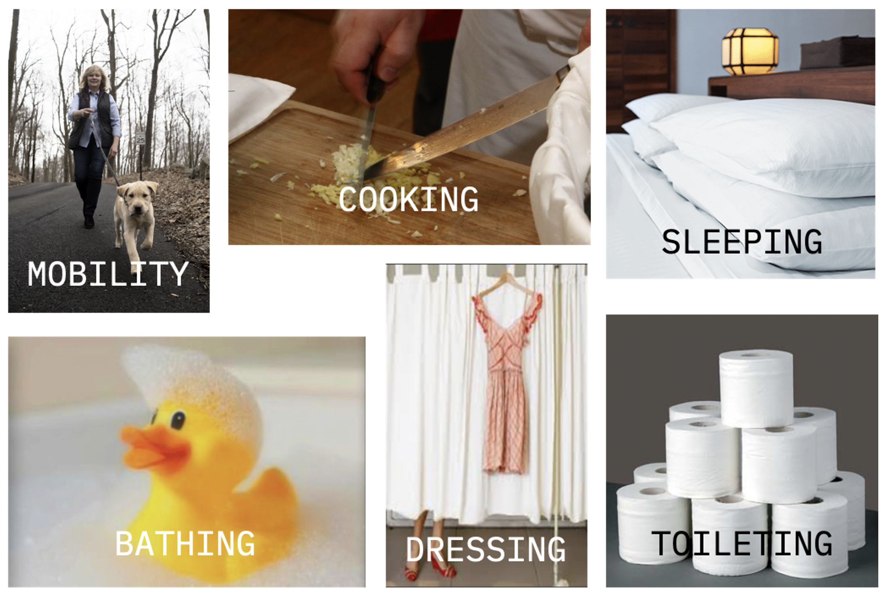
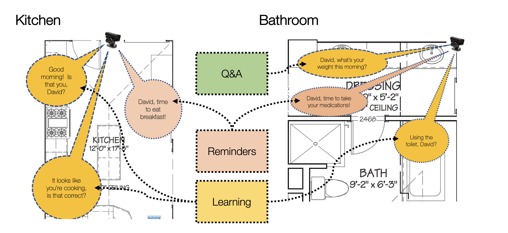
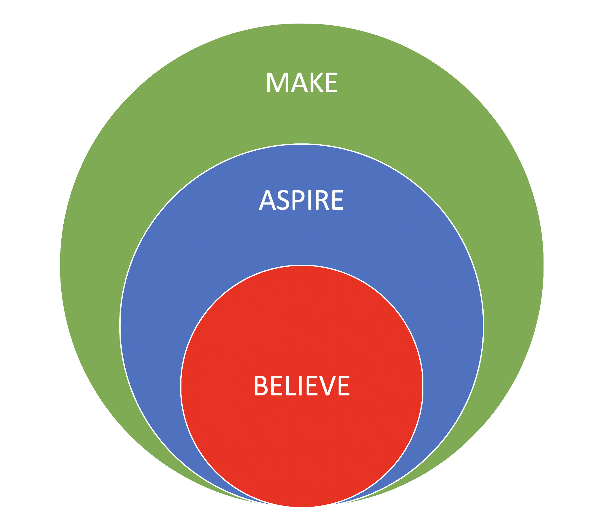
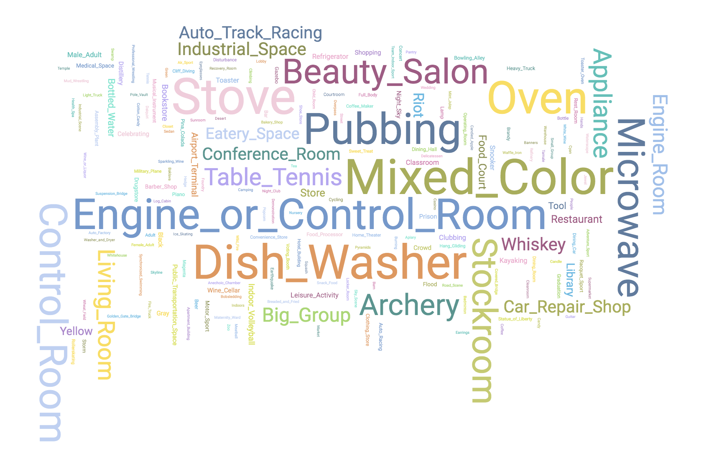
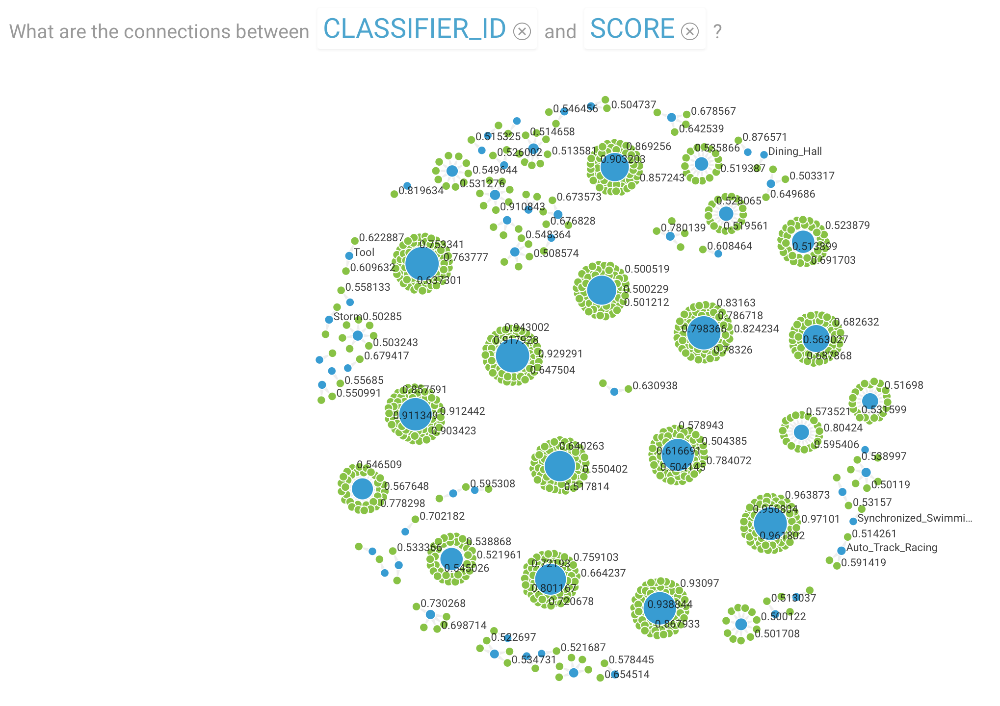
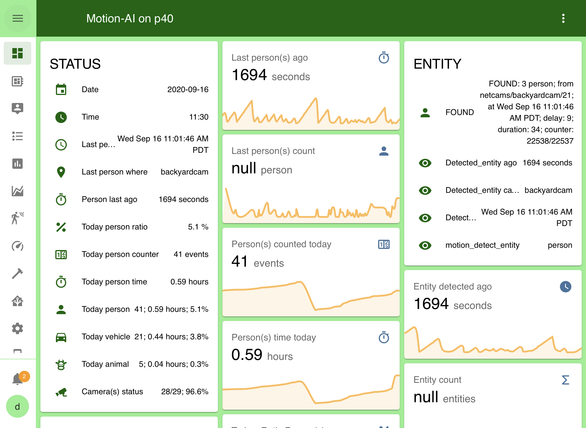

|

|
Private, personal, elder care and assistance
Improving elder wellness at home using artificial intelligence to sense, respond, inform, understand, plan, predict, and act.
|
Our Story
Inspired by an award-winning IBM Cognitive Build project; now available as an open-source project!
Age-At-Home provides personal, local, artificial intelligence to assist and interact with both the elderly and their community of family, friends, and care-givers.
Utilizing open-source software from Home Assistant and the LINUX Foundation's Open Horizon, the system provides
distributed and decentralized edge AI to sense and respond to end-user activities and interactions.
While many approaches to assisting the elderly require devices to be worn or smartphone apps and sending data to the Cloud,
Age-At-Home is a pervasive, but not invasive, aggregation of your Internet-of-Things (IOT) and "smart" devices and their capabilities.
Analyzing data, producing information, and sensing and responding in the home; disclosing only your selected information to friends, family, or care-takers.
Our objective is to improve the lives of people, starting with the elderly, by sensing and responding in the home
and leveraging communities of shared interest to improve AI's ability to understand, learn, plan, and interact.
How does it work?
Age-At-Home interfaces with Internet-of-Things (IoT) devices, including cameras, microphones, speakers and utilizes artificial intelligence to:
- processs sensor data into information (e.g.
person detected kitchen)
- calculate information statistics for normal to help determine abnormal conditions
- interact for reminders, notifications, with rule-based automations
- collect feedback enabling automated learning and improved predictions
Activities of Daily Living (ADL)
The portfolio of AI's detect the presence of people -- and animals, vehicles, faces, posture -- and analyze that data to produce actionable information relevant for the key performance indicators:
- Mobility
- Cooking
- Sleeping
- Bathing
- Dressing
- Toileting
|

|
Proactive engagements via voice
Reminders for activities, e.g. eating, bathing, ...Question & Answer to request confirmation or selection of optionLearning from new examples based on feedback
|

|
Our Principles
We believe AI accuracy depends on data intimacy; and intimacy requires privacy.
We aspire to effect ethical AI with beneficial outcomes.
We make to help people live more satisfying and fulfilling lives.
|

|
References
Video
Analysis
Entity detection information across time and location; for example analysis of person detected in the kitchen: |
|
Entities detected in the kitchen, including heatmap, cloud, and relationships
|
 |
|  |
|  |
|
Open Source
All the hardware, software, and components are open source and generally available.
|
Motion Ã👁 - Platform for capture and analysis of IoT sensor data (aka situational awareness)
|

|
|
Home Assistant - home automation software enabling access to 1,000+ IoT devices from many vendors, including those from Apple and Amazon
|

|
|
Open Horizon - LINUX Foundation project for distribution and management of AI services
|

|
Prototypes
If you've read all the way to here and you still want more information, you can find me at the following places; or click on the little blue circle in the lower right of your web browser to talk to me directly:
LinkedIn
GitHub
Twitter


{kind=link}